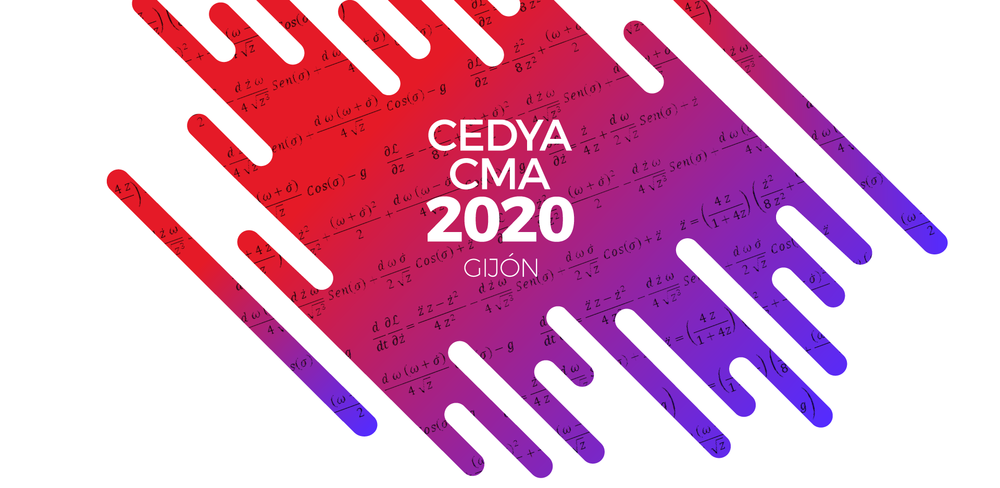

XXVI CEDYA / XVI CMA Gijón
https://cedya2020.es
Mariano José Mateos Alberdi
Universidad de Oviedo
En la primavera de 2020 nos vimos obligados a posponer la celebración del XXVI CEDYA / XVI CMA, prevista inicialmente para junio de 2020. Revisando los acontecimientos con la información de la que disponemos a día de hoy, creo que era la única opción posible.
En el momento de la decisión, prácticamente todo el congreso estaba organizado, tanto la parte científica como los actos sociales. Ya estaban aceptadas más de 270 ponencias, incluyendo diez plenarias, intervenciones en diecisiete minisimposios, medio centenar de contribuciones individuales, la sesión de premios de SEMA y la sesión de pósteres. Más de doscientas personas ya habían confirmado su inscripción, entre ellas unos cincuenta estudiantes, además de los veinte becarios, y más de cincuenta investigadores extranjeros. El horario estaba hecho y creo que solo nos faltaba por decidir la sidrería para la cena.
De acuerdo con el Consejo Ejecutivo de SEMA, se decidió que el XXVI CEDYA / XVI CMA no se iba a cancelar, sino que se iba a celebrar en junio de 2021. Desde aquí quiero agradecer al Consejo Ejecutivo, y en especial a la que era Presidenta de SEMA en esos momentos, Rosa Donat, y a la Vicepresidenta, Dolores Gómez, por todo el apoyo que nos han dado en estos meses.
La principal novedad es que el congreso pasa a la modalidad híbrida. Por primera vez tendremos un CEDYA / CMA presencial-telemático. Cada cual podrá elegir su modalidad de participación en el momento de inscribirse. Aquellos que opten por la participación online podrán impartir su charla desde donde estén telemáticamente en tiempo real y también podrán seguir todas las charlas de su interés a través de internet. A los socios de SEMA que lo deseen, les enviaremos la imagen de la Figura 18 para que la pongan de fondo de pantalla.
Si las autoridades sanitarias no permitieran la celebración de la parte presencial del congreso en las fechas previstas, habrá que pasar al plan C: el congreso pasaría a ser completamente online.
El proceso de inscripción, que es independiente del proceso de envío de propuestas científicas, estará abierto desde el 9 de febrero de 2021 hasta el 23 de mayo de 2021. En este punto quiero agradecer al personal de la Fundación Universidad de Oviedo la intensa labor desarrollada durante estos meses, atendiendo a la puntual devolución de todas las facturas que se le han solicitado y su disposición a buscar soluciones a todos los problemas causados por el aplazamiento del congreso de nuestra sociedad.
La tarifa para la participación online es sensiblemente más barata que la tarifa para la participación presencial. También está prevista una tarifa con descuento para aquellos que se inscriban en la modalidad presencial hasta el 30 de marzo de 2021. Como siempre, los miembros de SEMA disfrutarán de un descuento sobre la tarifa general. Los estudiantes por supuesto gozarán en todas las modalidades de tarifas superreducidas, atendiendo al compromiso de la SEMA con la formación, recién renovado con la aprobación de la modificación de los estatutos en la asamblea de diciembre de 2020.
En noviembre de 2020 abrimos de nuevo el open-call para enviar, retirar o modificar contribuciones. Hasta el 14 de febrero es posible enviar nuevas propuestas para contribuciones individuales y hasta el 30 de marzo para la sesión de pósteres.
Los autores que lo deseen, podrán enviar un resumen de su comunicación para su publicación en el libro de actas del congreso hasta el 14 de mayo.
